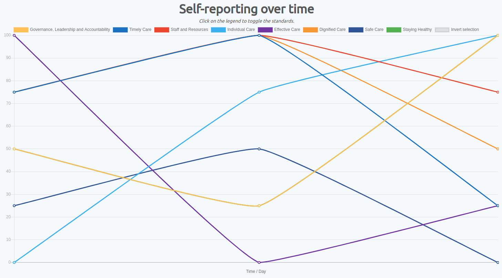
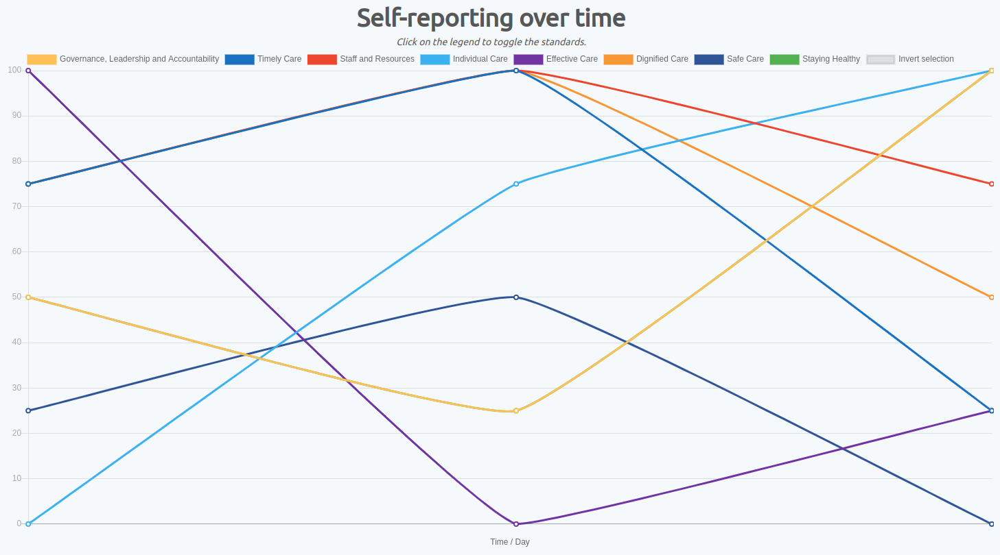

VISUALISATIONS
METHOD 1: Line Charts
For a given dashboard most users can navigate to the statistics page where they can view a graph of their overall progress.
The score for each standard is stored from a number between 0 to 4. Therefore, the best way to represent this data is to convert each score to a percentage.
As a result, we can plot the Score (as a percentage) on the Y-axis and the Time (in Days) on the X-axis.

The system makes use of the


The system makes use of the
Line component from the react-chartjs-2 library which is a react wrapper for the Chart.js library. Since Chart.js is a client-side JavaScript library we are required to have a specific format to render
the graph. Therefore, we created another react component called LineChart to format the data from our API call to our PostgreSQL to correctly feed it into the Chart.js Line component.
METHOD 2: Quick Data Summarisations
Quick Summary section of the statistics page shows a mean of all self-assessments taken for the given dashboard. The section comprises of a Circle Accordion which makes use of the built in circle component from react-suite. The calculation for the average
statistic for each health and safety standard is handled on the backend.